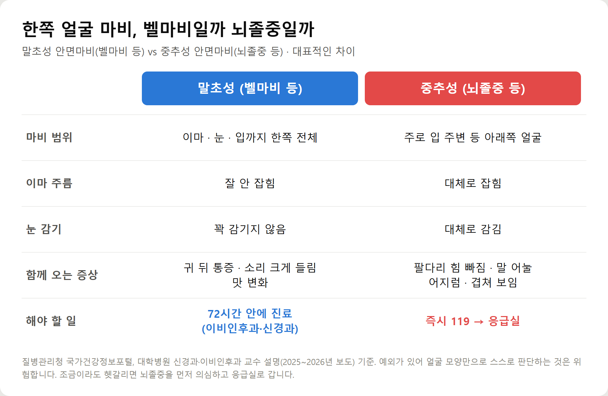
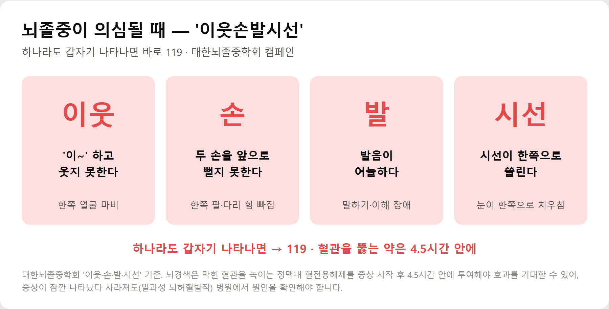
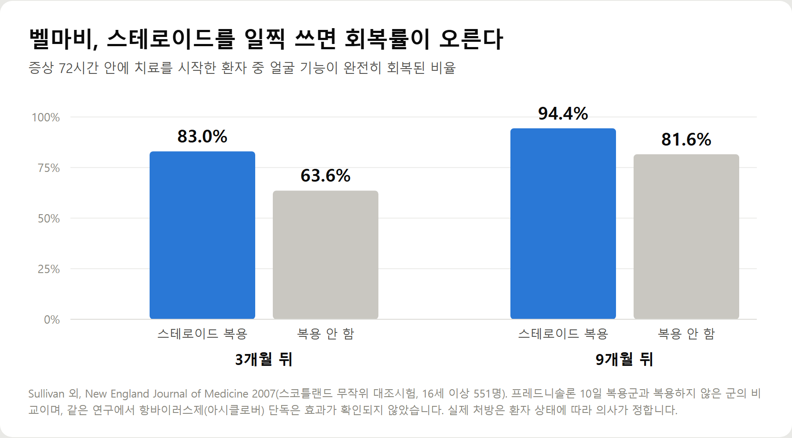
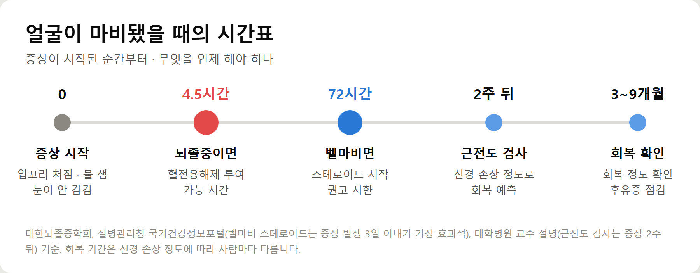

<meta charset="utf-8">
<title>구안와사(안면마비), 뇌졸중과 구별법 — 나의 투자 그리고 행복한 여행</title>
<meta name="description" content="구안와사(안면마비) 초기증상과 원인, 뇌졸중과 구별하는 법(이웃손발시선), 72시간 안 스테로이드 치료와 회복률, 눈 보호와 후유증까지 정리했습니다.">
<meta name="viewport" content="width=device-width, initial-scale=1">
<link rel="canonical" href="https://worldtraveler1.tistory.com/61">
<link rel="preconnect" href="https://fonts.googleapis.com">
<link rel="preconnect" href="https://fonts.gstatic.com" crossorigin>
<link rel="stylesheet" href="https://fonts.googleapis.com/css2?family=Hahmlet:wght@400;600;800&family=IBM+Plex+Mono:wght@400;500&family=IBM+Plex+Sans+KR:wght@300;400;500;600&display=swap">

<style>
  :root{
    --paper:#F2EEE6;--surface:#FAF8F3;--surface-2:#E7E1D5;
    --ink:#191510;--ink-2:#4A4235;--ink-3:#7D7364;
    --line:#D6CEBF;--line-soft:#E4DDD0;--accent:#B06A15;--accent-bright:#C2761A;
    --up:#E5484D;--down:#3B82F6;
    --f-display:"Hahmlet",'Nanum Myeongjo',"Apple SD Gothic Neo",serif;
    --f-body:"IBM Plex Sans KR","Apple SD Gothic Neo","Malgun Gothic",sans-serif;
    --f-mono:"IBM Plex Mono","SFMono-Regular",Consolas,monospace;
    --pad:clamp(20px,5vw,64px);
  }
  @media (prefers-color-scheme:dark){
    :root:not([data-theme="light"]){
      --paper:#0B1120;--surface:#121A2C;--surface-2:#1A2439;
      --ink:#E9EEF7;--ink-2:#A9B5C9;--ink-3:#72809A;
      --line:#26314A;--line-soft:#1D2739;--accent:#E8A33D;--accent-bright:#F0B45C;
    }
  }
  *{box-sizing:border-box;}
  body{margin:0;background:var(--paper);color:var(--ink);font-family:var(--f-body);
    font-weight:300;font-size:1rem;line-height:1.75;-webkit-font-smoothing:antialiased;}
  a{color:inherit;}
  img{max-width:100%;height:auto;}
  .wrap{max-width:760px;margin:0 auto;padding-inline:var(--pad);}
  .nav{position:sticky;top:0;z-index:20;background:color-mix(in srgb,var(--paper) 88%,transparent);
    backdrop-filter:saturate(180%) blur(12px);border-bottom:1px solid var(--line);}
  .nav-in{display:flex;align-items:center;justify-content:space-between;height:58px;}
  .brand{font-family:var(--f-display);font-weight:600;font-size:1rem;letter-spacing:-.02em;text-decoration:none;}
  .back{font-family:var(--f-mono);font-size:.72rem;color:var(--ink-3);text-decoration:none;}
  .article{padding-block:clamp(40px,7vw,72px) clamp(56px,9vw,96px);}
  .eyebrow{font-family:var(--f-mono);font-size:.68rem;letter-spacing:.16em;text-transform:uppercase;
    color:var(--accent);margin:0 0 14px;}
  h1{font-family:var(--f-display);font-weight:800;font-size:clamp(1.6rem,4.4vw,2.3rem);
    line-height:1.3;letter-spacing:-.03em;margin:0 0 16px;}
  .byline{font-family:var(--f-mono);font-size:.72rem;color:var(--ink-3);
    padding-bottom:24px;border-bottom:1px solid var(--line);margin-bottom:32px;}
  h2{font-family:var(--f-display);font-weight:600;font-size:1.25rem;letter-spacing:-.02em;margin:42px 0 14px;}
  h3{font-family:var(--f-display);font-weight:600;font-size:1.05rem;letter-spacing:-.02em;
    margin:30px 0 10px;padding-top:14px;border-top:1px solid var(--line-soft);}
  h3 .code{font-family:var(--f-mono);font-size:.7rem;font-weight:400;color:var(--ink-3);margin-left:6px;}
  p{margin:0 0 18px;color:var(--ink-2);}
  ul.checks{margin:0 0 18px;padding-left:20px;color:var(--ink-2);}
  ul.checks li{margin-bottom:8px;font-size:.94rem;}
  table{width:100%;border-collapse:collapse;font-size:.88rem;margin-bottom:8px;}
  th{font-family:var(--f-mono);font-size:.66rem;letter-spacing:.06em;text-transform:uppercase;
    color:var(--ink-3);text-align:right;padding:8px 6px;border-bottom:1px solid var(--line);}
  th:first-child{text-align:left;}
  td{padding:10px 6px;border-bottom:1px solid var(--line-soft);color:var(--ink-2);}
  td.num{font-family:var(--f-mono);text-align:right;font-variant-numeric:tabular-nums;}
  td.up{color:var(--up);} td.down{color:var(--down);}
  .scroll{overflow-x:auto;}
  figure{margin:22px 0;}
  figure img{display:block;border-radius:3px;background:var(--surface-2);}
  figcaption{margin-top:8px;font-family:var(--f-mono);font-size:.68rem;color:var(--ink-3);text-align:center;}
  .note{margin-top:34px;padding:16px 18px;border-left:3px solid var(--accent);
    background:var(--surface);border-radius:0 3px 3px 0;}
  .note p{margin:0;font-size:.85rem;color:var(--ink-3);}
  .foot{border-top:1px solid var(--line);background:var(--surface);padding-block:30px 38px;}
  .foot p{margin:0;font-size:.8rem;color:var(--ink-3);}
</style>

<nav class="nav">
  <div class="wrap nav-in">
    <a class="brand" href="../index.html">나의 투자 그리고 행복한 여행</a>
    <a class="back" href="../index.html#stocks">← 시황으로</a>
  </div>
</nav>

<main class="wrap article">
  <p class="eyebrow">Market</p>
  <h1>안면마비(벨마비) 정리 — 뇌졸중 구별, 72시간 스테로이드 치료, 회복률 근거 (2026)</h1>
  <p class="byline">건강 · 2026-09-14 기준</p>

  <p>한 줄 요약: 얼굴 한쪽이 갑자기 마비되면 먼저 뇌졸중 증상(팔다리 힘 빠짐·말 어눌·어지럼)이 함께 있는지 보고, 있으면 즉시 119입니다. 얼굴만 마비된 벨마비라면 72시간 안에 스테로이드 치료를 시작해야 회복률이 높습니다(3개월 완전 회복 83.0% vs 63.6%, NEJM 2007).</p>
  <p>2026년 9월 안은진 씨의 구안와사 고백 보도를 계기로, 질병관리청·대한뇌졸중학회 자료와 임상 연구를 바탕으로 정리한 기록입니다.</p>
  <h2>핵심만 먼저</h2>
  <ul class="checks">
    <li>구안와사 = 안면마비 — 얼굴 근육을 움직이는 제7뇌신경(얼굴신경)에 문제가 생겨 한쪽 얼굴이 마비되는 병입니다</li>
    <li>먼저 확인할 것 — 팔다리 힘 빠짐, 말 어눌함, 어지럼이 함께 있으면 뇌졸중일 수 있으니 즉시 119</li>
    <li>벨마비라면 — 증상 72시간 안에 스테로이드 치료를 시작하는 것이 권고됩니다</li>
    <li>눈 보호 — 눈이 완전히 감기지 않으면 각막이 상할 수 있어 인공눈물·안연고·수면 중 보호가 필요합니다</li>
    <li>회복 — 일찍 치료한 벨마비 환자는 대부분 회복되지만, 늦으면 비대칭이나 연합운동 같은 후유증이 남을 수 있습니다</li>
  </ul>
  <h2>1. 구안와사는 어떤 병인가</h2>
  <p>구안와사(口眼喎斜)는 입과 눈이 비뚤어진 상태를 뜻하는 한자어입니다. 의학적으로는 안면신경마비, 얼굴마비라고 부릅니다.</p>
  <p>얼굴 표정을 만드는 근육은 제7뇌신경인 얼굴신경이 움직입니다. 이 신경은 표정뿐 아니라 눈물과 침 분비, 혀 앞쪽의 맛, 귀로 들어오는 소리 조절에도 관여합니다. 그래서 마비가 오면 얼굴 모양만 달라지는 게 아닙니다.</p>
  <ul class="checks">
    <li>양치하거나 물을 마실 때 한쪽 입가로 물이 샌다</li>
    <li>한쪽 눈이 꽉 감기지 않고, 눈물이 흐르거나 눈이 뻑뻑하다</li>
    <li>이마에 주름이 잡히지 않고 눈썹을 올리기 어렵다</li>
    <li>웃을 때 입꼬리가 한쪽만 올라가고, 음식이 한쪽 입안에 남는다</li>
    <li>귀 뒤가 아프거나, 소리가 크게 울려 들리거나, 맛이 둔해진다</li>
  </ul>
  <p>얼굴이 부은 듯 둔한 느낌이 들어도 피부 감각은 대개 정상입니다. 근육을 움직이는 신경과 감각을 느끼는 신경이 다르기 때문입니다.</p>
  <p>흔한 병입니다. 건강보험심사평가원 국민관심질병통계에 따르면 대표적인 안면마비인 벨마비로 진료받은 사람은 한방 의료기관을 포함해 2020년 10만 4,961명에서 2024년 10만 9,732명으로 늘었습니다.</p>
  <h2>2. 가장 먼저 — 뇌졸중인지 구별하기</h2>
  <p>얼굴 마비는 원인이 어디에 있느냐에 따라 두 가지로 나뉩니다. 얼굴신경 자체에 문제가 생긴 말초성, 그리고 뇌에 문제가 생긴 중추성입니다. 보도된 전문가 설명에 따르면 얼굴 마비의 90% 이상은 말초성입니다. 하지만 나머지 중추성에는 뇌경색·뇌출혈 같은 응급 질환이 들어 있습니다.</p>
  <figure><figcaption>말초성 안면마비(벨마비)와 중추성 안면마비(뇌졸중) 구별 포인트</figcaption></figure>
  <p>구별의 대표적인 단서는 이마입니다. 이마 근육은 양쪽 뇌의 지배를 함께 받기 때문에, 뇌졸중으로 한쪽 뇌가 손상돼도 이마 주름은 비교적 잡히는 경우가 많습니다. 반면 벨마비는 이마부터 입까지 한쪽 얼굴 전체가 움직이지 않는 경우가 흔합니다.</p>
  <p>더 중요한 단서는 얼굴 말고 다른 증상입니다. 한쪽 팔다리에 힘이 빠지거나, 말이 어눌하거나, 심하게 어지럽거나, 물건이 두 개로 보이거나, 삼키기 어렵다면 뇌졸중 가능성을 먼저 생각해야 합니다.</p>
  <figure><figcaption>뇌졸중 의심 증상 확인법 '이웃손발시선' (대한뇌졸중학회)</figcaption></figure>
  <p>대한뇌졸중학회는 '이웃손발시선'으로 기억하라고 권합니다. '이~' 하고 웃지 못하거나, 두 손을 앞으로 뻗지 못하거나, 발음이 어눌하거나, 시선이 한쪽으로 쏠리면 곧바로 119입니다. 뇌경색이라면 막힌 혈관을 녹이는 약을 증상 시작 후 4.5시간 안에 써야 효과를 기대할 수 있습니다.</p>
  <p>이마 주름 같은 단서에는 예외가 있습니다. 얼굴만 보고 스스로 판단하지 말고, 조금이라도 헷갈리면 뇌졸중을 먼저 의심해 응급실로 가는 편이 안전합니다.</p>
  <h2>3. 벨마비의 원인 — 아직 뚜렷하지 않다</h2>
  <p>벨마비는 검사를 해도 특별한 원인이 발견되지 않는 급성 말초성 안면마비를 말합니다. 헤르페스 바이러스 등이 신경에 염증을 일으키고, 붓는 신경이 좁은 뼈 통로 안에서 눌리면서 마비가 온다는 설명이 유력합니다.</p>
  <p>원인이 따로 있는 안면마비도 있습니다.</p>
  <ul class="checks">
    <li>램지헌트 증후군 — 대상포진 바이러스가 얼굴신경을 침범한 경우입니다. 귀 주변이나 귓속에 물집과 심한 통증이 함께 옵니다</li>
    <li>중이염 합병증, 머리 외상, 종양 — 원인 질환을 함께 치료해야 합니다</li>
    <li>기저질환 — 당뇨병, 고혈압 같은 질환이 위험을 높이는 요인으로 꼽힙니다</li>
  </ul>
  <p>과로, 스트레스, 수면 부족, 찬 바람 노출, 큰 일교차도 흔히 거론됩니다. 다만 '찬 데서 자서 생긴 병'이라며 가볍게 여기다 치료 시기를 놓치는 것은 피해야 합니다. 원인과 상관없이 먼저 진료를 받아 원인을 구분하는 것이 순서입니다.</p>
  <h2>4. 치료 — 72시간이 중요한 이유</h2>
  <p>질병관리청 국가건강정보포털은 벨마비에서 스테로이드(부신피질호르몬제)가 증상 발생 후 3일 이내에 가장 효과적이라고 설명합니다. 신경의 염증과 부종을 빨리 가라앉힐수록 신경 손상이 덜 굳어지기 때문입니다.</p>
  <figure><figcaption>벨마비 스테로이드 조기 치료와 완전 회복률 (NEJM 2007 무작위 대조시험)</figcaption></figure>
  <p>근거가 되는 대표 연구가 있습니다. 2007년 국제학술지 NEJM에 실린 스코틀랜드 연구에서, 증상 72시간 안에 스테로이드(프레드니솔론)를 복용한 환자는 3개월 뒤 83.0%가 완전히 회복됐습니다. 복용하지 않은 환자는 63.6%였습니다. 9개월 뒤에는 94.4% 대 81.6%였습니다.</p>
  <p>같은 연구에서 항바이러스제만 쓰는 것은 효과가 확인되지 않았습니다. 다만 대상포진이 원인인 램지헌트 증후군에서는 스테로이드와 항바이러스제, 진통제를 함께 씁니다. 어떤 약을 얼마나 쓸지는 진찰 후 의사가 정합니다.</p>
  <figure><figcaption>얼굴 마비가 왔을 때의 시간표 — 4.5시간(뇌졸중), 72시간(벨마비), 2주(근전도)</figcaption></figure>
  <ul class="checks">
    <li>진료과 — 이비인후과 또는 신경과. 뇌졸중이 의심되면 응급실</li>
    <li>검사 — 신경학적 진찰이 기본이고, 고령이거나 양쪽에 마비가 오면 MRI를 찍기도 합니다. 증상 2주쯤 뒤 근전도 검사로 신경 손상 정도와 회복 가능성을 가늠합니다</li>
    <li>눈 보호 — 인공눈물, 안연고, 잘 때 눈이 드러나지 않게 하는 보호가 필요합니다. 눈이 충혈되고 아프거나 시야가 흐리면 안과 진료도 받습니다</li>
    <li>물리치료·재활 — 전기자극, 안면운동 치료를 병행하기도 합니다</li>
    <li>한방 치료 — 침 등을 함께 받는 경우가 많습니다. 스테로이드 같은 초기 치료를 대신하기보다는 함께 쓰는 쪽으로 의료진과 상의합니다</li>
  </ul>
  <p>안은진 씨도 양방과 한방 치료를 함께 받았고, 스테로이드 부작용으로 얼굴과 무릎이 부어 힘들었다고 말했습니다. 스테로이드는 부종 외에도 혈당을 올릴 수 있어, 당뇨병이 있다면 처방받을 때 반드시 알려야 합니다.</p>
  <h2>5. 회복과 후유증</h2>
  <p>일찍 치료를 시작한 벨마비는 대부분 회복됩니다. 대학병원 교수들은 약물과 물리치료를 병행하면 80~90% 이상이 발병 전 상태로 돌아올 가능성이 높다고 설명합니다.</p>
  <p>하지만 신경 손상이 심했거나 치료가 늦으면 후유증이 남을 수 있습니다.</p>
  <ul class="checks">
    <li>얼굴 비대칭 — 마비된 쪽 근육 힘이 완전히 돌아오지 않는 경우</li>
    <li>연합운동 — 신경이 잘못 이어져 눈을 감을 때 입꼬리가 같이 움직이는 현상</li>
    <li>악어의 눈물 — 음식을 먹을 때 눈물이 흐르는 현상</li>
    <li>근육 경직 — 마비됐던 쪽이 오히려 당기고 굳는 느낌</li>
  </ul>
  <p>후유증에는 보툴리눔톡신 주사, 재활치료, 수술 같은 방법이 쓰입니다. 다만 보도에 따르면 이런 치료가 미용 목적으로 오해받아 실손보험 청구가 거절되는 사례도 있어, 진단서와 치료 목적을 분명히 해두는 것이 좋습니다.</p>
  <h2>비용·조건 한눈에 보기</h2>
  <ul class="checks">
    <li>건강보험 — 안면마비 진료·검사·약물 치료는 건강보험 급여 대상입니다</li>
    <li>외래 본인부담 — 의원 30%, 병원 40%, 종합병원 50%, 상급종합병원 60% (일반 건강보험 기준)</li>
    <li>한방 첩약 — 안면신경마비는 첩약 건강보험 시범사업 대상 질환입니다 (보도 기준 연간 최대 20일)</li>
    <li>응급실 — 뇌졸중이 의심되면 비용보다 시간이 먼저입니다. 직접 운전해 가기보다 119를 불러 치료가 가능한 병원으로 가는 것이 좋습니다</li>
    <li>후유증 치료 — 보툴리눔톡신·도수치료 등은 목적에 따라 보험 적용이 달라질 수 있어 미리 확인합니다</li>
  </ul>
  <h2>주의할 점</h2>
  <ul class="checks">
    <li>"며칠 쉬면 낫겠지"는 금물입니다 — 안은진 씨도 그렇게 생각했다가 증상이 나빠졌다고 말했습니다</li>
    <li>잠깐 나타났다 사라진 증상도 확인합니다 — 뇌졸중의 전조인 일과성 뇌허혈발작일 수 있습니다</li>
    <li>귀에 물집이나 심한 통증이 있으면 — 램지헌트 증후군 가능성이 있어 항바이러스 치료가 필요할 수 있습니다</li>
    <li>스테로이드를 스스로 끊지 않습니다 — 처방받은 대로 복용하고, 부작용이 있으면 의사와 상의합니다</li>
    <li>눈이 감기지 않는데 방치하지 않습니다 — 각막 손상은 얼굴 마비보다 오래 남을 수 있습니다</li>
  </ul>
  <h2>자주 묻는 질문</h2>
  <p>Q. 입이 돌아갔는데 응급실에 가야 하나요?</p>
  <p>팔다리 힘 빠짐, 말 어눌함, 심한 어지럼, 겹쳐 보임 중 하나라도 함께 있으면 바로 119입니다. 얼굴만 마비됐더라도 스스로 확신이 서지 않으면 응급실에서 뇌졸중 여부를 확인하는 편이 안전합니다.</p>
  <p>Q. 벨마비는 병원에 언제까지 가야 하나요?</p>
  <p>가능한 한 빨리, 늦어도 증상 72시간 안에 치료를 시작하는 것이 권고됩니다. 주말이라도 미루지 않는 것이 좋습니다.</p>
  <p>Q. 찬 바람을 맞아서 생긴 건가요?</p>
  <p>추위, 과로, 스트레스, 수면 부족이 흔히 거론되지만 벨마비의 원인은 아직 뚜렷하게 밝혀지지 않았습니다. 바이러스에 의한 신경 염증이 유력한 설명입니다.</p>
  <p>Q. 한의원과 병원 중 어디로 가야 하나요?</p>
  <p>초기에는 뇌졸중 등 원인을 구별하고 스테로이드 치료 여부를 판단할 수 있는 이비인후과·신경과 진료를 먼저 받는 것이 좋습니다. 한방 치료는 그와 함께 받는 방식으로 의료진과 상의합니다.</p>
  <p>Q. 완전히 낫나요?</p>
  <p>일찍 치료한 벨마비는 대부분 회복됩니다. 연구에서는 스테로이드 조기 치료군의 94.4%가 9개월 안에 완전히 회복됐습니다. 다만 신경 손상이 심하면 회복이 더디거나 후유증이 남을 수 있어 근전도 검사로 경과를 봅니다.</p>
  <p>Q. 다시 생길 수도 있나요?</p>
  <p>재발하는 경우가 있습니다. 같은 쪽이나 반대쪽에 다시 생기면 다른 원인이 있는지 검사가 필요할 수 있으니 진료 때 이전 병력을 꼭 알립니다.</p>
  <h2>정리하면</h2>
  <p>양치하다 물이 새고, 한쪽 눈이 감기지 않고, 이마 주름이 잡히지 않는다면 구안와사(안면마비)를 의심할 수 있습니다.</p>
  <p>가장 먼저 할 일은 뇌졸중이 아닌지 확인하는 것입니다. 팔다리 힘 빠짐이나 말 어눌함이 함께 있으면 바로 119, 얼굴만 마비된 벨마비라면 72시간 안에 이비인후과나 신경과에서 치료를 시작합니다. 눈 보호도 잊지 않습니다.</p>
  <p>'며칠 쉬면 낫겠지' 하고 기다린 시간이 회복을 가르는 병입니다. 가족이나 주변 사람에게 이 순서를 한 번 알려두면 좋습니다.</p>
  <p>다음 글에서는 안면마비의 원인이 되기도 하는 대상포진과 50세 이상 백신 접종 기준을 정리하겠습니다.</p>
  <div class="note"><p>이 글은 공공기관 자료와 연구, 언론 보도를 바탕으로 한 일반 건강 정보이며 진단이나 치료를 대신하지 않습니다. 얼굴 마비가 생기면 스스로 판단하지 말고 의료기관에서 진료를 받으세요. 뇌졸중이 의심되면 즉시 119에 연락하세요.</p></div>
  <p>※ 기준 시점: 안은진·선우용여 관련 보도 2026년 9월 13~14일, 벨마비 진료인원은 건강보험심사평가원 국민관심질병통계(2020·2024년, 2025년 12월 보도), 스테로이드 회복률은 Sullivan 외 NEJM 2007, 뇌졸중 증상과 4.5시간 기준은 대한뇌졸중학회, 치료 시기는 질병관리청 국가건강정보포털 기준입니다.</p>
</main>

<footer class="foot">
  <div class="wrap"><p>나의 투자 그리고 행복한 여행 · 투자 판단의 참고 자료일 뿐, 매수·매도를 권유하지 않습니다.</p></div>
</footer>
